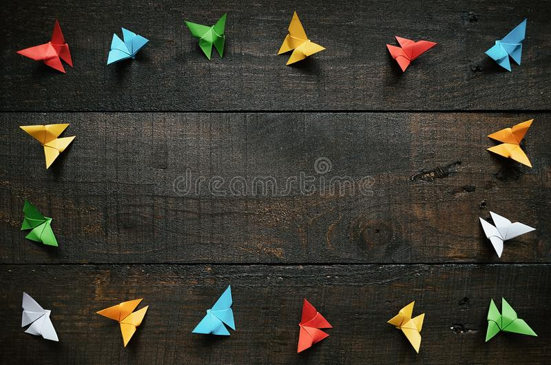

Origami Desings
About Us

follow us
Origami Instructions and Diagrams
Step by step diagrams are probebly the most popular and easiest to follow way to
show how to fold things out of paper.
Trying to find good origami instructions on the internet can be a lot of work though. To
help your search we've put together the largest database of free origrami diagrams anywhere on the internet.
this are some ideas
it uses p5.js,p5.play.js and matter.js libraries in javasripts
IT WILL HEPL YOU just click on photos you will get steps

chameleons
Intresting facts about chameleon

pigeon
Intresting facts about pigeon
- pigeons are incredibly complex and intelligent animals.
- pigeons are reowned for their outstanding navigational abilities.
- pigeons have excellent hearing abilities.

camel
Intresting facts about camels
- There are two types of camels: One humped or “dromedary” camels and two humped Bactrian camels..
- Camels have three sets of eyelids and two rows of eyelashes to keep sand out of their eyes..
- Camels have thick lips which let them forage for thorny plants other animals can't eat..

teddy-bear
Intresting facts about teddy-bear
- A grizzly bear’s bite is estimated to be strong enough to crush a bowling ball.
- In Churchill, Canada many locals leave their cars unlocked in case someone needs to make a quick escape from a polar bear.
- Due to the melting Arctic Ice, Polar and Grizzly Bears are mating. Their hybrid offspring are known as “pizzlies”.

panda
Intresting facts about panda
- Giant pandas are good at climbing trees and can also swim.
- Giant pandas can't stand and do kung fu moves like Po in Kungfu Panda.
- They can climb trees from 7 months old.

cicada
Intresting facts about cicada
- Cicadas are members of the Cicadoidea superfamily.
- There are about 3,000 known species of cicadas worldwide.
- A cicada’s body color can be black, brown and green.